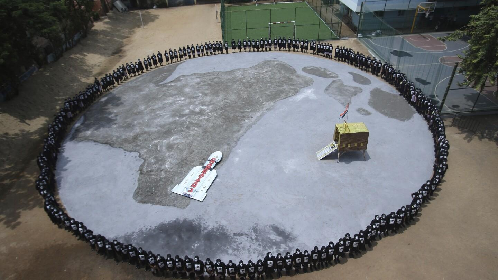

India's spacecraft is preparing to land on the moon in the country's second attempt in 4 yearsIndia lands a spacecraft near the moon’s south pole, a first for the world as it joins elite club India became the first country to land a spacecraft near the moon’s south pole on Wednesday — a historic voyage to uncharted territory that scientists believe could hold vital reserves of frozen water, and a technological triumph for the world’s most populous nation. (Aug. 23) Journalists film the live telecast of spacecraft Chandrayaan-3 landing on the moon at ISRO’s Telemetry, Tracking and Command Network facility in Bengaluru, India, Wednesday, Aug. 23, 2023. India has landed a spacecraft near the moon’s south pole, an uncharted territory that scientists believe could hold vital reserves of frozen water and precious elements, as the country cements its growing prowess in space and technology. (AP Photo/Aijaz Rahi) Schoolchildren celebrate the successful landing of spacecraft Chandrayaan-3 on the moon, in a school in Guwahati, India, Wednesday, Aug. 23, 2023. (AP Photo/Anupam Nath) Indian Space Research Organization (ISRO) Chairman S. Somanath addresses the media after the successful landing of spacecraft Chandrayaan-3 on the moon at ISRO’s Telemetry, Tracking and Command Network facility in Bengaluru, India, Wednesday, Aug. 23, 2023. (AP Photo/Aijaz Rahi) People watch the landing of Chandrayaan-3, or “moon craft” at Omani University in Hyderabad, India, Wednesday, Aug. 23, 2023. (AP Photo/Mahesh Kumar A.) This image from video provided by the Indian Space Research Organisation shows the surface of the moon as the Chandrayaan-3 spacecraft prepares for landing on Wednesday, Aug. 23, 2023. India became the first country to land a spacecraft near the moon’s south pole, which scientists believe could hold vital reserves of frozen water. (ISRO via AP) Students celebrate the successful landing of Chandrayaan-3, or “moon craft” while watching a live telecast at Omani University in Hyderabad, India, Wednesday, Aug. 23, 2023. India has landed a spacecraft near the moon’s south pole, an unchartered territory that scientists believe could hold vital reserves of frozen water and precious elements, as the country cements its growing prowess in space and technology. (AP Photo/Mahesh Kumar A.) Schoolchildren celebrate the successful landing of spacecraft Chandrayaan-3 on the moon, in a school in Guwahati, India, Wednesday, Aug. 23, 2023. India has landed a spacecraft near the moon’s south pole, an unchartered territory that scientists believe could hold vital reserves of frozen water and precious elements, as the country cements its growing prowess in space and technology. (AP Photo/Anupam Nath) Schoolchildren celebrate the successful landing of spacecraft Chandrayaan-3 on the moon, in a school in Guwahati, India, Wednesday, Aug. 23, 2023. (AP Photo/Anupam Nath) Schoolchildren celebrate the successful landing of spacecraft Chandrayaan-3 on the moon, in a school in Guwahati, India, Wednesday, Aug. 23, 2023. (AP Photo/Anupam Nath) The moon shines over Indian Space Research Organization (ISRO) Telemetry, Tracking and Command Network facility in Bengaluru, India, Wednesday, Aug. 23, 2023. (AP Photo/Aijaz Rahi) Indian Space Research Organization (ISRO) Chairman S. Somanath and his officers celebrate the successful landing of spacecraft Chandrayaan-3 on the moon at ISRO’s Telemetry, Tracking and Command Network facility in Bengaluru, India, Wednesday, Aug. 23, 2023. India has landed a spacecraft near the moon’s south pole, an unchartered territory that scientists believe could hold vital reserves of frozen water and precious elements, as the country cements its growing prowess in space and technology.(AP Photo/Aijaz Rahi) Schoolchildren celebrate the successful landing of spacecraft Chandrayaan-3 on the moon, in a school in Guwahati, India, Wednesday, Aug. 23, 2023. (AP Photo/Anupam Nath) People celebrate as they watch a live telecast of the landing og Chandrayaan-3, or “moon craft” in Sanskrit, in Mumbai, India, Wednesday, Aug. 23, 2023. (AP Photo/Rajanish Kakade) People watch the live telecast of the landing of Chandrayaan-3, at the Integrated Command Control Centre (ICCC) in Varanasi, India, Wednesday, Aug. 23, 2023. India has landed a spacecraft near the moon’s south pole, an unchartered territory that scientists believe could hold vital reserves of frozen water and precious elements, as the country cements its growing prowess in space and technology. (AP Photo/Rajesh Kumar Singh) A girl stands with the Indian national flag as she watches a live telecast of the landing og Chandrayaan-3, or “moon craft” in Sanskrit, in Mumbai, India, Wednesday, Aug. 23, 2023. (AP Photo/Rajanish Kakade) Schoolchildren celebrate the successful landing of spacecraft Chandrayaan-3 on the moon, in a school in Guwahati, India, Wednesday, Aug. 23, 2023. India has landed a spacecraft near the moon’s south pole, an unchartered territory that scientists believe could hold vital reserves of frozen water and precious elements, as the country cements its growing prowess in space and technology. (AP Photo/Anupam Nath) People celebrate as they watch a live telecast of the landing og Chandrayaan-3, or “moon craft” in Sanskrit, in Mumbai, India, Wednesday, Aug. 23, 2023. India has landed a spacecraft near the moon’s south pole, an unchartered territory that scientists believe could hold vital reserves of frozen water and precious elements, as the country cements its growing prowess in space and technology. (AP Photo/Rajanish Kakade) This image from video provided by the Indian Space Research Organisation shows the surface of the moon as the Chandrayaan-3 spacecraft prepares for landing on Wednesday, Aug. 23, 2023. India became the first country to land a spacecraft near the moon’s south pole, which scientists believe could hold vital reserves of frozen water. (ISRO via AP) India became the first country to land a spacecraft near the moon’s south pole on Wednesday — a historic voyage to uncharted territory that scientists believe could hold vital reserves of frozen water, and a technological triumph for the world’s most populous nation. (Aug. 23) Journalists film the live telecast of spacecraft Chandrayaan-3 landing on the moon at ISRO’s Telemetry, Tracking and Command Network facility in Bengaluru, India, Wednesday, Aug. 23, 2023. India has landed a spacecraft near the moon’s south pole, an uncharted territory that scientists believe could hold vital reserves of frozen water and precious elements, as the country cements its growing prowess in space and technology. (AP Photo/Aijaz Rahi) Journalists film the live telecast of spacecraft Chandrayaan-3 landing on the moon at ISRO’s Telemetry, Tracking and Command Network facility in Bengaluru, India, Wednesday, Aug. 23, 2023. India has landed a spacecraft near the moon’s south pole, an uncharted territory that scientists believe could hold vital reserves of frozen water and precious elements, as the country cements its growing prowess in space and technology. (AP Photo/Aijaz Rahi) Schoolchildren celebrate the successful landing of spacecraft Chandrayaan-3 on the moon, in a school in Guwahati, India, Wednesday, Aug. 23, 2023. (AP Photo/Anupam Nath) Indian Space Research Organization (ISRO) Chairman S. Somanath addresses the media after the successful landing of spacecraft Chandrayaan-3 on the moon at ISRO’s Telemetry, Tracking and Command Network facility in Bengaluru, India, Wednesday, Aug. 23, 2023. (AP Photo/Aijaz Rahi) Indian Space Research Organization (ISRO) Chairman S. Somanath addresses the media after the successful landing of spacecraft Chandrayaan-3 on the moon at ISRO’s Telemetry, Tracking and Command Network facility in Bengaluru, India, Wednesday, Aug. 23, 2023. (AP Photo/Aijaz Rahi) People watch the landing of Chandrayaan-3, or “moon craft” at Omani University in Hyderabad, India, Wednesday, Aug. 23, 2023. (AP Photo/Mahesh Kumar A.) This image from video provided by the Indian Space Research Organisation shows the surface of the moon as the Chandrayaan-3 spacecraft prepares for landing on Wednesday, Aug. 23, 2023. India became the first country to land a spacecraft near the moon’s south pole, which scientists believe could hold vital reserves of frozen water. (ISRO via AP) This image from video provided by the Indian Space Research Organisation shows the surface of the moon as the Chandrayaan-3 spacecraft prepares for landing on Wednesday, Aug. 23, 2023. India became the first country to land a spacecraft near the moon’s south pole, which scientists believe could hold vital reserves of frozen water. (ISRO via AP) Students celebrate the successful landing of Chandrayaan-3, or “moon craft” while watching a live telecast at Omani University in Hyderabad, India, Wednesday, Aug. 23, 2023. India has landed a spacecraft near the moon’s south pole, an unchartered territory that scientists believe could hold vital reserves of frozen water and precious elements, as the country cements its growing prowess in space and technology. (AP Photo/Mahesh Kumar A.) Students celebrate the successful landing of Chandrayaan-3, or “moon craft” while watching a live telecast at Omani University in Hyderabad, India, Wednesday, Aug. 23, 2023. India has landed a spacecraft near the moon’s south pole, an unchartered territory that scientists believe could hold vital reserves of frozen water and precious elements, as the country cements its growing prowess in space and technology. (AP Photo/Mahesh Kumar A.) Schoolchildren celebrate the successful landing of spacecraft Chandrayaan-3 on the moon, in a school in Guwahati, India, Wednesday, Aug. 23, 2023. India has landed a spacecraft near the moon’s south pole, an unchartered territory that scientists believe could hold vital reserves of frozen water and precious elements, as the country cements its growing prowess in space and technology. (AP Photo/Anupam Nath) Schoolchildren celebrate the successful landing of spacecraft Chandrayaan-3 on the moon, in a school in Guwahati, India, Wednesday, Aug. 23, 2023. India has landed a spacecraft near the moon’s south pole, an unchartered territory that scientists believe could hold vital reserves of frozen water and precious elements, as the country cements its growing prowess in space and technology. (AP Photo/Anupam Nath) Schoolchildren celebrate the successful landing of spacecraft Chandrayaan-3 on the moon, in a school in Guwahati, India, Wednesday, Aug. 23, 2023. (AP Photo/Anupam Nath) Schoolchildren celebrate the successful landing of spacecraft Chandrayaan-3 on the moon, in a school in Guwahati, India, Wednesday, Aug. 23, 2023. (AP Photo/Anupam Nath) The moon shines over Indian Space Research Organization (ISRO) Telemetry, Tracking and Command Network facility in Bengaluru, India, Wednesday, Aug. 23, 2023. (AP Photo/Aijaz Rahi) Indian Space Research Organization (ISRO) Chairman S. Somanath and his officers celebrate the successful landing of spacecraft Chandrayaan-3 on the moon at ISRO’s Telemetry, Tracking and Command Network facility in Bengaluru, India, Wednesday, Aug. 23, 2023. India has landed a spacecraft near the moon’s south pole, an unchartered territory that scientists believe could hold vital reserves of frozen water and precious elements, as the country cements its growing prowess in space and technology.(AP Photo/Aijaz Rahi) Indian Space Research Organization (ISRO) Chairman S. Somanath and his officers celebrate the successful landing of spacecraft Chandrayaan-3 on the moon at ISRO’s Telemetry, Tracking and Command Network facility in Bengaluru, India, Wednesday, Aug. 23, 2023. India has landed a spacecraft near the moon’s south pole, an unchartered territory that scientists believe could hold vital reserves of frozen water and precious elements, as the country cements its growing prowess in space and technology.(AP Photo/Aijaz Rahi) Schoolchildren celebrate the successful landing of spacecraft Chandrayaan-3 on the moon, in a school in Guwahati, India, Wednesday, Aug. 23, 2023. (AP Photo/Anupam Nath) People celebrate as they watch a live telecast of the landing og Chandrayaan-3, or “moon craft” in Sanskrit, in Mumbai, India, Wednesday, Aug. 23, 2023. (AP Photo/Rajanish Kakade) People watch the live telecast of the landing of Chandrayaan-3, at the Integrated Command Control Centre (ICCC) in Varanasi, India, Wednesday, Aug. 23, 2023. India has landed a spacecraft near the moon’s south pole, an unchartered territory that scientists believe could hold vital reserves of frozen water and precious elements, as the country cements its growing prowess in space and technology. (AP Photo/Rajesh Kumar Singh) People watch the live telecast of the landing of Chandrayaan-3, at the Integrated Command Control Centre (ICCC) in Varanasi, India, Wednesday, Aug. 23, 2023. India has landed a spacecraft near the moon’s south pole, an unchartered territory that scientists believe could hold vital reserves of frozen water and precious elements, as the country cements its growing prowess in space and technology. (AP Photo/Rajesh Kumar Singh) A girl stands with the Indian national flag as she watches a live telecast of the landing og Chandrayaan-3, or “moon craft” in Sanskrit, in Mumbai, India, Wednesday, Aug. 23, 2023. (AP Photo/Rajanish Kakade) A girl stands with the Indian national flag as she watches a live telecast of the landing og Chandrayaan-3, or “moon craft” in Sanskrit, in Mumbai, India, Wednesday, Aug. 23, 2023. (AP Photo/Rajanish Kakade) Schoolchildren celebrate the successful landing of spacecraft Chandrayaan-3 on the moon, in a school in Guwahati, India, Wednesday, Aug. 23, 2023. India has landed a spacecraft near the moon’s south pole, an unchartered territory that scientists believe could hold vital reserves of frozen water and precious elements, as the country cements its growing prowess in space and technology. (AP Photo/Anupam Nath) Schoolchildren celebrate the successful landing of spacecraft Chandrayaan-3 on the moon, in a school in Guwahati, India, Wednesday, Aug. 23, 2023. India has landed a spacecraft near the moon’s south pole, an unchartered territory that scientists believe could hold vital reserves of frozen water and precious elements, as the country cements its growing prowess in space and technology. (AP Photo/Anupam Nath) People celebrate as they watch a live telecast of the landing og Chandrayaan-3, or “moon craft” in Sanskrit, in Mumbai, India, Wednesday, Aug. 23, 2023. India has landed a spacecraft near the moon’s south pole, an unchartered territory that scientists believe could hold vital reserves of frozen water and precious elements, as the country cements its growing prowess in space and technology. (AP Photo/Rajanish Kakade) People celebrate as they watch a live telecast of the landing og Chandrayaan-3, or “moon craft” in Sanskrit, in Mumbai, India, Wednesday, Aug. 23, 2023. India has landed a spacecraft near the moon’s south pole, an unchartered territory that scientists believe could hold vital reserves of frozen water and precious elements, as the country cements its growing prowess in space and technology. (AP Photo/Rajanish Kakade) This image from video provided by the Indian Space Research Organisation shows the surface of the moon as the Chandrayaan-3 spacecraft prepares for landing on Wednesday, Aug. 23, 2023. India became the first country to land a spacecraft near the moon’s south pole, which scientists believe could hold vital reserves of frozen water. (ISRO via AP) This image from video provided by the Indian Space Research Organisation shows the surface of the moon as the Chandrayaan-3 spacecraft prepares for landing on Wednesday, Aug. 23, 2023. India became the first country to land a spacecraft near the moon’s south pole, which scientists believe could hold vital reserves of frozen water. (ISRO via AP) NEW DELHI (AP) — India became the first country to land a spacecraft near the moon’s south pole on Wednesday — a historic voyage to uncharted territory that scientists believe could hold vital reserves of frozen water, and a technological triumph for the world’s most populous nation. After a failed attempt to land on the moon in 2019, India now joins the United States, the Soviet Union and China as only the fourth country to achieve this milestone. A lander with a rover inside touched down on the lunar surface at 6:04 p.m. local time, sparking celebrations across India, including in the southern Indian city of Bengaluru, where space scientists watching the landing erupted in cheers and applause. The successful mission showcases India’s rising standing as a technology and space powerhouse and dovetails with the image that Prime Minister Narendra Modi is trying to project: an ascendant country asserting its place among the global elite. “India is now on the moon. India has reached the south pole of the moon — no other country has achieved that. We are witnessing history,” Modi said as he waved the Indian tri-colored flag while watching the landing from South Africa, where he is participating in the BRICS nations summit. The lunar rover will slide down a flap from the lander within hours or a day and conduct experiments, including an analysis of the mineral composition of the lunar surface, said S. Somnath, chairman of the state-run Indian Space Research Organization. The mission, which began more than a month ago at an estimated cost of $75 million, is expected to last another two weeks. Somnath said that India would next attempt a manned lunar mission. Nuclear-armed India grew to become the world’s fifth-largest economy last year, and the success of the lunar mission will likely help Modi’s popularity ahead of a crucial general election next year. India’s success comes just days after Russia’s Luna-25, which was aiming for the same lunar region, spun into an uncontrolled orbit and crashed. It would have been the first successful Russian lunar landing after a gap of 47 years. Russia’s head of the state-controlled space corporation Roscosmos attributed the failure to the lack of expertise due to the long break in lunar research that followed the last Soviet mission to the moon in 1976. Modi’s efforts to revitalize India’s global standing — and to finally shake off the legacy of British colonialization — has resonated with many Indians. The moon landing was seen by many as further proof that their country is a rising, modern superpower. Excited and anxious people across India crowded around televisions in offices, shops, restaurants and homes. Thousands prayed Tuesday for the success of the mission with oil lamps on the river banks, temples and religious places, including the holy city of Varanasi in northern India. Indian Space Research Organization (ISRO) staff watch prime minister Narendra Modi speak after the successful landing of spacecraft Chandrayaan-3 on the moon at ISRO’s Telemetry, Tracking and Command Network facility in Bengaluru, India, Wednesday, Aug. 23, 2023. (AP Photo/Aijaz Rahi) As the lander approached the lunar surface, dozens of people in a government-run planetarium started praying with folded hands. They switched to cheering and clapping once the lander touched down. A man waved a banner reading ’’The Moon in India’s arms.” Shrini Singh, a New Delhi resident, said she got goosebumps. ’’It’s a very happy moment … you can see the energy. It’s beyond words.” Mitakshi Sinha, a student, said the successful mission motivated her. “And now I also want to be part of ISRO,” she said, referring to the country’s space agency. India will host next month’s G-20 Summit, and Modi is expected to use the event to spotlight the country’s growing geopolitical clout. Even as it maintains historic ties with Russia, the U.S. and other Western nations continue to woo India, whom they see as a critical bulwark against China’s growing influence. Accolades poured in from around the world to acknowledge India’s emergence as a modern space power. NASA Administrator Bill Nelson congratulated India on X, formerly known as Twitter, saying ``We’re glad to be your partner on this mission!” “Incredible!” European Space Agency’s director general Josef Aschbacher tweeted. India’s Chandrayaan-3 — “moon craft” in Sanskrit — took off from a launchpad in Sriharikota in southern India on July 14. Many countries and private companies are interested in the south pole region because permanently shadowed craters may hold frozen water that could help future astronaut missions use it as a potential source of drinking water or to make rocket fuel. The six-wheeled lander and rover module of Chandrayaan-3 is configured with payloads that will provide data to the scientific community on the properties of lunar soil and rocks, including chemical and elemental compositions. India’s previous attempt to land a robotic spacecraft near the moon’s little-explored south pole ended in failure in 2019. It entered the lunar orbit but lost touch with its lander, which crashed while making its final descent to deploy a rover to search for signs of water. According to a failure analysis report submitted to the ISRO, the crash was caused by a software glitch. Indian Space Research Organization (ISRO) Chairman S. Somanath addresses the media after the successful landing of spacecraft Chandrayaan-3 on the moon at ISRO’s Telemetry, Tracking and Command Network facility in Bengaluru, India, Wednesday, Aug. 23, 2023. (AP Photo/Aijaz Rahi) The $140-million mission in 2019 was intended to study permanently shadowed moon craters that are thought to contain water deposits and were confirmed by India’s Chandrayaan-1 orbiter mission in 2008. But India’s space program has been steadily advancing for years. Active since the 1960s, India has launched satellites for itself and other countries, and successfully put one in orbit around Mars in 2014. India is planning its first mission to the International Space Station next year, in collaboration with the United States. The anticipation for a successful landing rose after Russia’s failed attempt and as India’s regional rival China, which landed on the moon in 2013, reaches for new milestones in space. In May, China launched a three-person crew for its orbiting space station and hopes to put astronauts on the moon before the end of the decade. Relations between India and China have plunged since deadly border clashes in 2020. Numerous countries and private companies are racing to successfully land a spacecraft on the lunar surface. In April, a Japanese company’s spacecraft apparently crashed while attempting to land on the moon. An Israeli nonprofit tried to achieve a similar feat in 2019, but its spacecraft was destroyed on impact. Japan plans to launch a lunar lander to the moon over the weekend as part of an X-ray telescope mission, and two U.S. companies also are vying to put landers on the moon by the end of the year, one of them at the south pole. In the coming years, NASA plans to land astronauts at the lunar south pole, taking advantage of the frozen water in craters. Pallava Bagla, a science writer and co-author of books on India’s space exploration, said the Russian failure days earlier did not put India off. He also said lessons learned from India’s failed mission four years ago were incorporated and a flawless mission was executed on Wednesday. “Indians didn’t get derailed. They continued the journey with strength and confidence that paid off,” he said. ——- Video Journalist Shonal Ganguly contributed to this report from New Delhi. |
 |